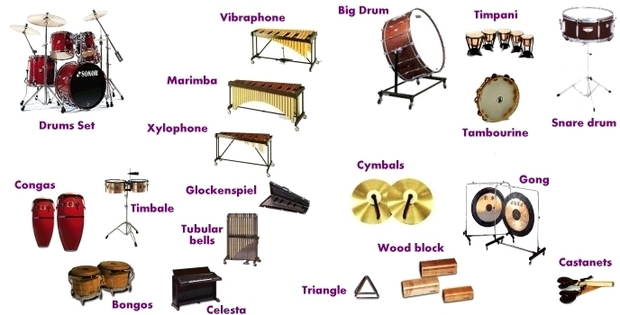

The Misc. Percussion
A percussion instrument is any instrument that produces a sound when hit, struck, rubbed, vibrated, shook, or scraped. Some common orchestral percussion instruments are the snare drum, bass drum, crash cymbals, triangle, marimba, timpani, and gong. Percussion is located at the very back of the orchestra, behind the brass instruments.
Jokes
How do you know is the stage is level?
If the percussionist has drool coming out both sides of their mouth.